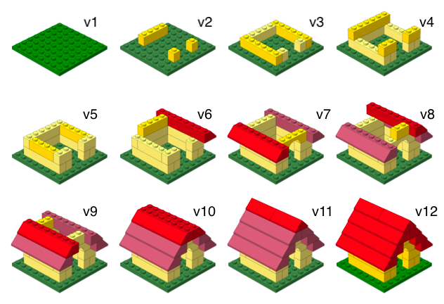

Introducing your Tools
R, Posit Cloud, Quarto, and Git
Agenda
Introductions
A brief introduction to R
RStudio Desktop and Posit Cloud
Working with Quarto and R Markdown
Version control and collaboration with git and GitHub
BST 680
The goal of this course is to familiarize you with using R for data engagements
How R is structured in vectors, dataframes, and lists
Working with different classes of data in R like logicals, characters, and dates
Basics of visualization with
ggplot2(which we’ll just callggplot)Data wrangling with the tidyverse
Some basics on functional programming and iteration
BST 680
We will do this using RStudio Desktop and Posit Cloud
How the RStudio IDE is organized
Changing options and layouts to support your needs
Working with Projects and building your own workflows and coding styles
Using markdown languages to unify code, results and output for sharing
Using other tools to support reproducibility and sharing
What this course will NOT do is use any statistical testing
By now you should have
Signed up for a Posit Cloud account
Installed R and RStudio Desktop locally
Started a GitHub account (this will come into play later)
Gotten a copy of R for Data Science (2e)

Introductions
Name
Department
Degree program
How did you most recently use statistical software for work or pleasure (R, Python, SAS, Prism, Excel, etc)

And now, a brief survey
Working with R
Who here…
has used R in any capacity?
made a plot using the
ggplot2“grammar of graphics”?made a formatted table using a package like
gt,kable, or something similar?knows how to use the tidyverse for data wrangling? (e.g. how does
tidyrdiffer fromdplyr)has written their own function in R?
knows why
NA == NAdoes not returnTRUE?
RStudio and its extensions
Who here…
knows why it’s important to use Projects in RStudio?
can describe the difference between a .rds file and a .RData file?
has used markdown (R, Quarto, or otherwise) to make a sharable document?
developed a Shiny application in R?
has contributed to a third-party GitHub repository?
knows why enquosures often fail inside of datamasks?
R and Data Science
An Overview of the Model
The workflow as described by Wickham et. al. in R4DS

An Overview of the Model
Importing - loading data into R (API, direct load, etc)
Tidying - getting your data into a consistent state for downstream use
Wrangling - modifying tidy data for better engagement e.g. new variable, summarizations, filtering
Visualizing / Tabulation - organizing wrangled data into a format to assist understanding
Modelling - evaluating how aspects of the data relate to each other
Communication - letting others know about your results
Our Toolkit

R \(\rightarrow\) Pure scriptability for data engagement
RStudio/Posit \(\rightarrow\) Cohesive wrangling of code bases
Quarto \(\rightarrow\) Literate scripts combining code, narrative, and output in one
Git / GitHub /
renv\(\rightarrow\) Version and environmental control for reproducible consistency
A Brief Into to R
So what is R?
A (functional) programming language
The environment in which the programming language is run
Domain-specific language emphasizing data management and statistical analysis
It is NOT a general purpose language (although you can con it into behaving like one)
R essentials - A VERY Short List
R begins with objects which store some sort of information, a string, series of numbers, complex data structure, etc.; these are the “nouns of the language
For storing data, we’ll often think of vectors, data frames, and lists
. . .
R essentials - A VERY Short List
R does its heavy lifting via functions which are the “verbs” is the language
These are comprised of the
function()followed by a series of arguments which the function is applied to
. . .
R essentials - A VERY Short List
But base R only has so many functions; thus most support comes from community-developed packages
Those approved and hosted by CRAN can be installed using
install.packages()Other options include BioConductor which focuses on Omics and other large datasets or GitHub for more developmental packages
All packages get loaded via the
library()command to gain access to their functions but only once per session
. . .
#Installing and loading the package_name library
install.packages("package_name")
library(package_name)Working with RStudio and Posit
The R Console
- We start with the R console but we will never use it directly (ever)

- Only use this is you want to punish yourself
RStudio
Instead, we use the RStudio (more formally the RStudio Desktop) which is an IDE (Integrated Development Environment)
Unifies the R console with code, environment, and viewing
Organizes code files, saved R objects, and external data into Projects
Many other quality-of-life features will get into
This is common practice for ANY programming language
Other examples would be Jupyter or IDLE (frequently used for Python) or Google Collab Notebooks
What’s a Posit?

In mid-2022 RStudio (the company) changed their name to Posit to reflect a wider data science space than just R
In particular, the work very well with other programming languages like Python and Julia (which we won’t cover here)
.e.g. RStudio integrates very will with Python code via the
reticulate()packageThey still refer to the local desktop IDE as “RStudio” although many other tools go by “Posit” now
I will often refer to both of them interchangeably
What is Posit Cloud?
A hosted version of RStudio Desktop in the cloud that makes it easy to collaborate using Posit’s supported languages, primarily R and Python
This makes it an excellent way to teach and learn about data science using R, which is what we’ll be doing
Let’s Take a Tour - RStudio
Let’s Take a Tour - RStudio Basics
Concepts introduced:
The Panes - Console, Source, Environments, Output
Working in the console (like a barbarian)
The Environment - Projects and objects and files
Engaging with data objects outside the console
Source - R functions and working with them
Personalizing your RStudio experience
Much of this can be found in the RStudio User Guide
RStudio - The Panes
- Visual display is comprised of four panes
- Source: Edit and save your scripts or other IDE documents like Quarto .qmd files
- Console: Execute codes, directly or from the Source; access a Unix-esque Terminal for CLI tasks like git or quarto commands
- Environment: Controlling local R objects and other low-level session aspects
- Output: Display created R outputs like plots/tables/HTML or other high-level controls (packages, files)
RStudio - The Panes

RStudio - The Console
The console allows for interactivity with R code and code execution
Includes several QoL improvements like code completion, fuzzy matching for functions, and linking to help documentation
Can easily navigate previous commands from the console using the up arrow Up for single commands Ctrl+Up or Cmd+Up to access a list of prior commands
Also includes tabs for the Terminal (which we’ll discuss with Git)
Also displays your current working directory
RStudio - The Environment
- The environment powers “scoping” i.e. where and how data is stored locally for the current session
- For our purposes, we’ll be a bit broader and think about the environment for…
- Objects - data structures made in the current session
- Projects - an organized association of files specific to a context
- Files - R objects saved to files
RStudio - The Environment - Objects
An Object is any locally created “thing” saved within the current session
You can see (most) objects listed in the Environment tab which provide a lot of additional information

RStudio - The Environment - Projects
Projects let you associate everything related to a single contextual task together:
- Input data
- Scripts
- Saved outputs like results, figures, or R objects
- Folder structures
This also lets you divide your work so each task has it’s own working directory, workspace, history, and source documentation
For example, each of these lectures is it’s own project
RStudio - The Environment - Projects
Projects are controlled by .RProj files and contain all project-specific options, metadata and temporary files
Project can be easily created/navigated and you can overwrite global options in RStudio based on project specific needs


RStudio - The Environment - Files
Within a project, you can have many indivdual Files
This can be raw input data in common file formats like delimited files (.csv, .tsv, .txt, etc) or something more elaborate like Excel workbooks
- These are designed to be read into the current local environment for the current session
Similar output formats can be saved as those file types, individual image files in many formats, or compiled reports generation from Quarto or R Markdown
- Folder structure in your project helps with organizing input/output
RStudio - The Environment - Files
There are also R and RStudio specific files we can use
- .R - source scripts, ways to store the code you write
- .rds - individual data objects written to and read from file
#Make something
i_made_an_object <- c("it", "has", "stuff")
#Save it to file
saveRDS(i_made_an_object, file = "and_i_want_to_save_it.rds")
#And get it back as needed
now_i_need_it_back <- readRDS("and_i_want_to_save_it.rds").RData - An entire workspace consisting of multiple objects / .rds files
.qmd / .rmd - Markdown files used to generate sharable formats
RStudio - The Environment - Files
- You can easily navigate your files and folder structures (as well as other things) in the Output pane

RStudio - Viewing Objects
We’ll spend a lot of time engaging with objects programatically, but sometimes you want to just play with a data object
For this we can use the Data Viewer using either the
View()command or from the Environment tabIt does have some limitations, you can learn more from the RStudio User’s Guide
RStudio - The Source Panel
Most of what your active engagement will take place in the source panel where you will write and execute code
Much of what you see and do is context dependent according to the type of file you’re working on e.g. .R scripts vs .qmd Markdown


RStudio - The Source Panel
Executing code from the Source can be done in a myriad of ways
One line a time using Ctrl+Enter or the Run button on the toolbar
Multiple lines at once by highlighting several lines before using Ctrl+Enter or Run
Running the whole document via Ctrl+Shift+Enter or the Source toolbar button
Running code is similar for Quarto markdown or other computational documents although we work with code chunks instead

RStudio - Personalizing the Experience
- Many aspects of RStudio and Posit Cloud can be modified by going to Tools > Options menu or RStudio > Peferences on a Mac

RStudio - Personalizing the Experience
An older (September 2023) guide can be found on the Posit website
Some additional components not discussed there include options for the Console, R Markdown, Python, and Git’s Copilot
You can do very well with the defaults but play around a bit to see what works for you; most aesthetic choices are in the Pane Layout and Appearance tabs
RStudio - Personalizing the Experience
So set it up as you’d like but I have some quick recommendations
Under General R Options uncheck the first two options for R Sessions so you don’t automatically open the previous project or source documentation each time
For Workspace, uncheck the restoration of .RData into your workspace and set Save Workspace to “Never”
Under Code enable the native pipe operator
|>which we’ll use in place of the previous pipe ofmagrittr(%>%)Spend some time with the Pane Layout as well as relative positioning
1 and 2 in particular are best practice for memory considerations
RStudio - Some Final Tips
- Keyboard Shortcuts!! Alt+Shift+K or Alt+Shift+K or Tools menu
. . .
- Cheatsheets!! Posit has many, many cheat sheets you can find on their website including concise PDFs

Let’s Take a Tour - Posit Cloud
Posit Cloud - Key Points
The Posit IDE is no different from what you see in RStudio Desktop, this includes customizations
Navigation between workspaces and help is done via the sidebar
Spend some time with the Learn section which includes
- Guide - basic user guide for Posit Cloud
- Recipes - vignettes and code snippets
- Cheatsheets - another link to the Posit cheatsheets
We also add another layer of organization with Spaces
Posit Cloud - Spaces
Spaces or Workspaces are essentially collections of Projects we share on the Cloud
BST 680 has its own Space with each Project in the space containing everything needed for a lecture topic:
- Lectures, exercises, tutorials, support files, etc
Since this is a shared space, make sure you save a copy of each project to your own space
Only you and the instructors can access these saved projects
You can also export your projects to a local system for later use; although the Workspace shouldn’t be going away
The Rest of the Toolkit
The Tidyverse and Quarto
What is the Tidyverse?

- The tidyverse is an opinionated collection of R packages designed for data science.
- All packages share an underlying philosophy and a common syntax.
- The tidyverse is central to our text and we will work with it extensively along with many base R functions
The Tidyverse - a quick introduction
ggplot2- Creating visualizations using the “grammar of graphics”dplyr- Modifying and manipulating datatidyr- Making datasets consistent aka “tidy”stringr- Interacting with strings, including text matchingforcats- Working with factor class variableslubridate- Making working with date data easierpurrr- Simplifying iterationreadr- A high-level way to read (most) file types
The Tidyverse - The Soapbox

Quarto
Quarto as Markdown
Quarto is a markdown implementation that helps you communicate results
- Markdown simply is a way to “mark up” otherwise simple text
Provides dynamically updated or reproducible reports - each time you knit the code base will be run de novo
The literate programming allows for formatting of simple text but also let’s you interact with code
Code goes in chunks, defined by three backticks, narrative goes outside of chunks
Let’s take a tour - Quarto
Checkout the intro_to_Quarto.qmd (and rendered .html) file to get an introduction to:
Literate programming - ntergrating code, text and output
Rendering output
High-level control via the YAML headers and themes
Tabulating data with
gt
Quarto tips
The Quarto site (https://quarto.org) is a great place for getting started or getting other Guidance
You can check out the Quarto cheatsheet here
You can also check the Markdown Quick Reference in RStudio in the Help menu
The workspace of your Quarto document is separate from whatever is loaded in your environment
How will we use Quarto?
Everything we do, exercise / assignment / project / etc., is a Quarto document.
You’ll always have a template Quarto document to start with
Most of what you do early on, will simply be adding relevant code to get the desired output
We’ll do a deeper dive into Quarto customization at the end of the course
R Markdown vs Quarto
If you’ve used R Markdown you’ll notice some similarities with Quarto, so why Quarto?
Quarto provides a couple of benefits over what R Markdown down has done up to this point
- Much of the functionality of the R Markdown ecosystem is now unified
- Native support has been extended to other programming languages
- Behavior of niche applications (e.g.
xaringan) is now consistent
Still, for R Markdown specifically, you can always check the R Markdown cheat sheet
Git and GitHub
Git and GitHub - How we collaborate
The statistical programming language we use is R
The software we use to interface with R is RStudio or Posit
But…
. . .
How do I get you the materials for your assignments?
What happens if I need to update those materials?
How do I pull my updates into Posit Cloud?
Git and GitHub - Version control
- Early on, we will only require GitHub use as a platform for collaboration
. . .
- But it’s actually designed for version control which we’ll discuss alongside support packages like
renvandtargetsfor supporting:- Rigor
- Reproducibility
- Data sharing
Versioning - Bare Bones
Versioning lets us track our progress (and go back!)

Versioning - With Commits
We can go further by using “commit” messages to show our progress

Why do we need version control?

Git vs GitHub
Git is a version control system, like track changes but much, much better
GitHub is the home for your git-based projects (a.k.a. repositories) online, like OneDrive but much, much better

Git and GitHub - Final Thoughts
There are a tremendous number of git commands, most of which we will never use; instead, most of your utilization will be to use git to add, commit, push, and pull
Our formal interaction will be limited, but we will be installing git locally and I encourage you to get used to using it in practice
Still, if you’re feeling ambitious, everyone can benefit from learning more about git and engaging with GitHub
There is a great resource for working with git and R: happygitwithr.com
Recap and Next Time
Can you answer these questions?
What is R vs RStudio vs Posit?
What is Quarto and why does it matter?
What is git vs GitHub and do I need to care)?
What is version control and why do we care?
Next time
- Some actual coding and getting started with visualization